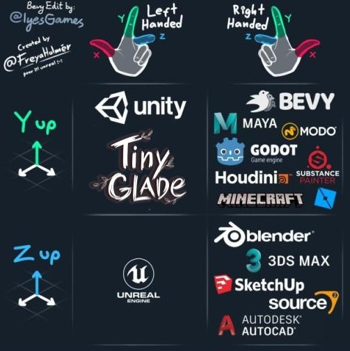

Mesh Rendering
In Tiny Glade, meshes are the 3D representations of all objects in the game, including decorations, clutter, and other elements.
Mesh Storage and Format
Meshes are stored as JSON files, containing arrays of points and various attributes defining their shape and behavior.
These files can be found in the assets/meshes folder.
Managing Meshes with RON
A special file, nani_meshes.ron, lists all available meshes and provides instructions on how they are loaded into the game.
This file contains attributes to control whether a mesh should be loaded or unloaded.
Info
The RON format is a human-readable serialization format, making it easy to edit with any text editor. You can learn more about RON here.
Differents kinds of meshes
The nani_mesh.ron register all meshes with their attributes ( if they have textures, or if glow for exemple). Meshes are grouped with others in subtypes with other meshes that share the sames attributes.
subsets also add or remove some attributes to their items(deprecated or useless). here is an exemple of the first subset SolidVertexColor. it's the most common and it regroup the basics decorators and clutters
subset: SolidVertexColor, #(1)!
attribs: (
remove: ["soft_normal", "Vertex_UV"], #(2)!
add: [
(name: "flags", ty: I32), #(3)!
],
),
meshes: [ #(4)
(name: "clutter/plant_pot_v1"),
....
]
- Name of the subset
- Removed attribute, even if they are in the mesh json file, the value is ignored while loaded.
- added atributes: the usage is not known
- the list of files without the extention that are in the subset
Danger
It's important to keep the same attributes if you modify. if an attribute is missing while loading it, the game will crash.
Some meshes like tree one are missing from this list because they are loaded in prefabs
Anatomy of a JSON mesh
Structure of a Mesh File
Meshes in Tiny Glade are stored as JSON files, each defining a 3D object. Below is the general structure of a mesh file. Json format is readable with any text editor, like vscode or notepad++.
attributes: An array that defines all attributes present in the file. These attributes are required and loaded by the game.- Attribute Values defined using the following format:
- The type of the buffer, it's often
intorfloat - The size of the vector, vector can sort data in sevral dimentions
- The array of values is in the
bufferproperty
Here is an anatomy of a full json file.
{"attributes": [
"Vertex_Position", # (1)!
"Vertex_Normal", # (2)!
"Vertex_Color", # (3)!
"Vertex_UV" # (4)!
],
"indices": { # (5)!
"type": [
"int",
1
],
"buffer": [
7,
6,
5,
...
]
},
"Vertex_Position": {
"type": [
"float",
3
],
"buffer": [
[
0.33000001311302185,
0.0,
0.0
]
...
]
},
"Vertex_Normal": {
"type": [
"float",
3
],
"buffer": [
[
0.0,
1.0,
0.0
]
...
]
},
"Vertex_Color": {
"type": [
"float",
3
],
"buffer": [
[
0.1463320553302765,
0.2409999966621399,
0.12218699604272842
]
...
]
},
"Vertex_UV": {
"type": [
"float",
2
],
"buffer": [
[
0.5,
0.5
]...
]
}
}
Vertex_Positionrepresents the position of each vertex in 3D space. It is a Vector3 composed of float values.Vertex_Normaldefines the normal orientation of each vertex.Vertex_Colorrepresents the RGB color of each vertex.Vertex_UVis the 2D representation of the vertex, used by some meshes for texture mapping.
Unfortunately, textures are not yet well understood.Indicesdefine the faces of the mesh. Each number represents a vertex index,and they work in groups of three. Each group of three numbers forms a triangle. UnlikeVertex_Position,Indicesare stored as an array of integers, not as a Vector3.
About Vectors
Vectors in Tiny Glade follow the same coordinate system as Unity, where:
- Y goes up
- X goes left

About Colors
Most items in the game do not use textures. Instead, each vertex's color is stored in a separate array. Each entry in this array corresponds to a vertex at the same index in the Vertex_Position array.
Colors are represented as vectors with three float components—each ranging from 0.0 to 1.0—corresponding to the Red, Green, and Blue channels.
For example: [0.2, 0.2, 0.18039216101169586].
Each vertex must have a corresponding color entry. This means the color array must be exactly the same size as the Vertex_Position array. If the sizes differ, the game will crash at startup.
(The specific error message will be added here later.)
RGB Color Basics
RGB stands for Red, Green, and Blue—the primary colors of light used in digital displays to create all visible colors.
Each channel (R, G, or B) can take a value from 0 to 255:
- 0 means none of that color.
- 255 means full intensity of that color.
In hexadecimal (hex) notation, RGB values are written as #RRGGBB, where:
- RR = Red
- GG = Green
- BB = Blue
Each component is a hex number from 00 (decimal 0) to FF (decimal 255).
Examples:
- #FF0000 = Red (255, 0, 0)
- #00FF00 = Green (0, 255, 0)
- #0000FF = Blue (0, 0, 255)
- #FFFFFF = White (255, 255, 255)
- #000000 = Black (0, 0, 0)
- #FFFF00 = Yellow (255, 255, 0)
Tiny Glade Color Format
In Tiny Glade, the same RGB principles apply, but the values are represented as floats between 0 and 1 rather than integers between 0 and 255. Additionally, the color components are stored in an array rather than a single hex string.
For example:
- [1.0, 0.0, 0.0] = Red
- [0.0, 1.0, 0.0] = Green
- [0.0, 0.0, 1.0] = Blue
Tip: I use the ColorHexa tool to easily convert between hex codes and RGB percentage.
Import into blender
Reading lists of vectors in a json file can be very tought. We create a Blender add on to allow import and export of json File. You can download the add on here. learn more in the Tiny Glade Blender AddOn